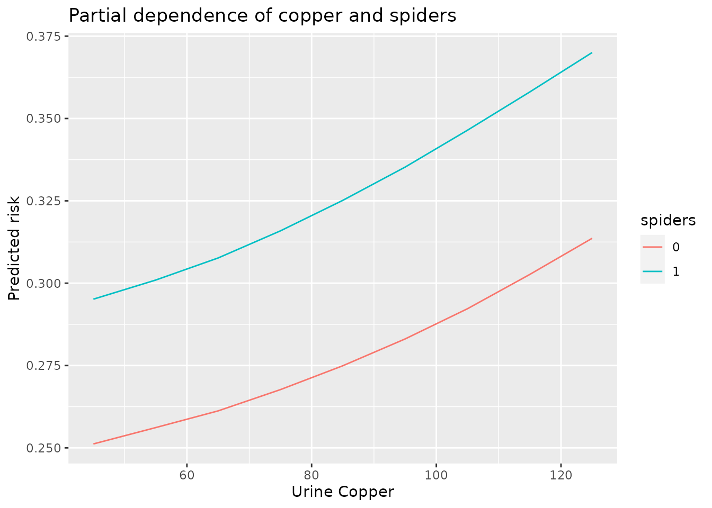

This article is under construction
Background: Partial dependence
Partial dependence plots show the average marginal effect a combination of features imparts on predicted risk. Individual conditional expectation plots narrow the focus to individual datapoints.
Getting partial dependance from an aorsf object
First fit an accelerated ORSF model on pbc_orsf, a modification of the Mayo Clinic Primary Biliary Cholangitis data:
set.seed(123)
orsf_fit <- orsf(data_train = pbc_orsf,
formula = Surv(time, status) ~ . -id,
n_tree = 2500)To view the partial dependence between predicted risk and the combination of blood vessel malformations in the skin (spiders) and urine copper (copper), we use orsf_pd_summary. The pd_spec argument contains the variable values we want to compute partial dependence for. By default oobag == TRUE, meaning partial dependence is calculated using the out of bag training data. We keep this set to TRUE because we are computing partial dependence using the training data. expand_grid == TRUE tells orsf_pd_summary to use all combinations of values in pd_spec.
pd_spec <- list(spiders = c("0", "1"),
copper = seq(45, 130, by = 10))
pd_data <- orsf_pd_summary(object = orsf_fit,
pd_spec = pd_spec,
oobag = TRUE,
expand_grid = TRUE)
ggplot(pd_data) +
aes(x = copper, y = mean, col = spiders) +
geom_line() +
labs(y = 'Predicted risk',
x = 'Urine Copper',
title = 'Partial dependence of copper and spiders')
Next lets look at Individual Conditional Expectation (ICE). Each instance in the dataset is represented by one line showing change in prediction dependent on change in a feature. While orsf_pd_ice allows you to use multiple features, it is recommended to view one at a time. In the plot below we can see how each data point’s predicted survival changes as copper changes.
ice_data <- orsf_pd_ice(object = orsf_fit,
pd_spec = list(copper = seq(45, 130, by = 10)),
expand_grid = TRUE)
ggplot(ice_data[id_row %in% c(1:30)]) +
aes(x=copper, y=pred, group=id_row) +
geom_line() +
labs(y = 'Predicted risk',
x = 'Urine Copper',
title = 'Individual conditional expectation of copper',
subtitle = 'Data for 30 patients are shown')